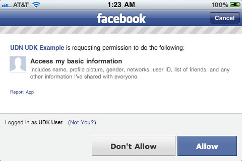
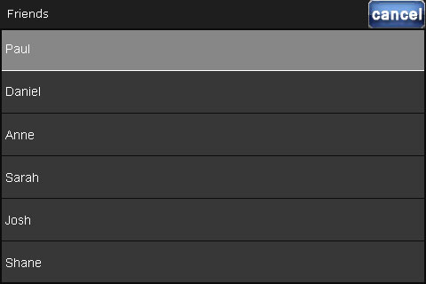
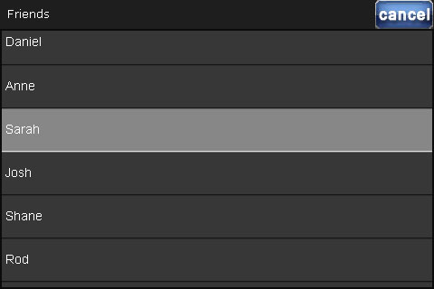

UDN
Search public documentation:
FacebookIntegrationKR
English Translation
日本語訳
中国翻译
Interested in the Unreal Engine?
Visit the Unreal Technology site.
Looking for jobs and company info?
Check out the Epic games site.
Questions about support via UDN?
Contact the UDN Staff
日本語訳
中国翻译
Interested in the Unreal Engine?
Visit the Unreal Technology site.
Looking for jobs and company info?
Check out the Epic games site.
Questions about support via UDN?
Contact the UDN Staff
UE3 홈 > 플랫폼 인터페이스 프레임워크 > FacebookIntegration (페이스북 통합)
FacebookIntegration (페이스북 통합)
문서 변경내역: Jeff Wilson 작성. 홍성진 번역.
개요
FacebookIntegration
FacebookIntegration 클래스는 페이스북과 연결하여 교류하는 함수성이 들어있는 베이스 클래스입니다. PlatformInterfaceBase 를 상속한 클래스로, 그에 포함되어 있는 델리게이트 시스템을 활용합니다. 각 (PC, iOS 등) 플랫폼에는 해당 플랫폼 전용 구현이 들어 있는 FacebookIntegration 에서 확장한 클래스를 자체적으로 갖고 있습니다.
프로퍼티
- AppID - 게임에 연결하기 위한 페이스북 어플리케이션 ID 입니다. 페이스북 개발자 사이트 에 어플리케이션을 셋업하면 얻을 수 있습니다. 각 게임은
DefaultEngine.ini컨픽 파일에 이 값을 지정해야 합니다. - Username - 인증 과정을 통해 얻은 플레이어의 사용자명을 담습니다.
- UserID - 인증 과정을 통해 얻은 플레이어의 페이스북 ID 를 담습니다.
- AccessToken - 인증 과정을 통해 얻은 플레이어용 액세스 토큰을 담습니다.
- FriendsList - 플레이어의 친구 목록을 담는
FacebookFriends배열입니다.- Name - 친구의 표시 이름입니다.
- Id - 친구의 페이스북 유저 ID 입니다.
- Init - 엔진이 페이스북 통합을 초기화시키기 위해 호출하는 이벤트입니다.
- Authorize - 게임에서 플레이어가 페이스북 정보에 접근할 수 있도록 하는 인증 과정을 시작합니다. 플레이어가 페이스북 앱에 권한을 허가해 줘야 합니다.
- IsAuthorized - 플레이어가 앱을 인증했는지 여부를 반환합니다.
- WebRequest [URL] [Verb] [Payload] [Tag] [bRetrieveHeaders] [bForceBinaryResponse] - 주어진 URL 에 지정된 데이터로 범용 웹 요청을 보냅니다. 이 반응은
FID_WebRequestComplete델리게이트 콜을 통해 나옵니다.- URL - 요청 URL 로, http 또는 (현재 플랫폼에서 전송 지원을 한다면) https 도 가능합니다.
- Verb - 요청의 종류("POST", "GET")를 지정하는 문자열입니다.
- Payload - 웹 요청의 페이로드로 전송할 (UTF8) 문자열입니다.
- bRetrieveHeaders - 참이면 반응 오브젝트는 헤더 전부를 포함합니다. (거짓이면 메모리 변동률이 크게 줄어듭니다.)
- bForceBinaryResponce - 참이면 반응은 절대로 문자열로 변환되지 않으며, 이진 반응 데이터에 저장됩니다.
- FacebookRequest [GraphRequest] - 페이스북 GraphAPI 요청을 보냅니다. 반응은
FID_FacebookRequestComplete델레게이트 콜을 통해 나옵니다.- GraphRequest -
"me/friends"등 만들 요청입니다. 자세한 것은 페이스북 GraphAPI 문서 를 참고해 주십시오.
- GraphRequest -
- FacebookDialog [Action] [ParamKeysAndValues] - 페이스북 동작, 플레이어의 담벼락에 게시하기 같은 작업을 하기 위한 플랫폼 대화창을 엽니다.
- Action - 열 대화창 종류("피드" 등)입니다.
- ParamKeysAndvalues - 대화창에 전해줄 (대화창 전용) 추가 파라미터를 지정하는 파라미터 배열입니다. 키와 값을 나눕니다: < "key1", "value1", "key2", "value2" >
- Disconnect - 페이스북과의 연결을 끊기 위해 호출합니다. 다음 번 인증 실행시, 인증 웹페이지가 다시 뜹니다.
EFacebookIntegrationDelegate 열거형은 콜백을 받을 수 있는 델리게이트 종류 ID 를 정의합니다. 플랫폼 인터페이스 델리게이트 시스템을 사용하여 이들 각각에 델리게이트를 할당할 수 있습니다.
- FID_AuthorizationComplete - 이 ID 로 할당된 델리게이트는 인증 프로세스에서의 반응이 수신되면 실행합니다.
- bSuccessful - 성공하면 참입니다.
- Data - 데이터를 담지 않습니다.
- FID_FacebookRequestComplete - 이 ID 로 할당된 델리게이트는 Facebook GraphAPI 요청에서의 반응이 수신되면 실행합니다.
- bSuccessful - 성공하면 참입니다.
- Data - GraphAPI 요청의 반응 문자열을 담습니다.
- FID_WebRequestComplete - 이 ID 로 할당된 델리게이트는 웹 요청에서의 반응이 수신되면 실행합니다.
- bSuccessful - 성공하면 참입니다.
- Data - 웹 요청에서의 반응 문자열을 담습니다.
- FID_DialogComplete - 이 ID 로 할당된 델리게이트는 웹 요청에서의 반응이 수신되면 실행됩니다.
- bSuccessful - 참이면 대화창은 성공, 거짓이면 대화창은 취소 또는 실패한 것입니다.
- Data - 대화창에서의 반응 문자열, 즉 반환 URL 이나 에러 메시지 등이 (있다면) 담습니다.
- FID_FriendsListComplete - 이 ID 로 할당된 델리게이트는 플레이어의 친구 목록에 대한 요청에서의 반응이 수신되면 실행됩니다.
- bSuccessful - 참이면 요청 성공입니다.
- Data - 데이터를 담지 않습니다. 친구 목록은
FriendsList배열에 저장됩니다.
구현 세부사항
- 페이스북 개발자 사이트에 페이스북 앱을 생성합니다.
- 페이스북의 콜백 처리를 위해
UDKGameOverrides.plist파일에CFBundleURLTypes항목을 추가합니다.<key>CFBundleURLTypes</key> <array> <dict> <key>CFBundleURLSchemes</key> <array> <string>fb[FacebookAppID]</string> </array> </dict> </array>[FacebookAppID]에 자신의 App ID 를 넣어야 합니다. -
DefaultEngine.ini파일의[FacebookIntegration]섹션에서,AppID프로퍼티를 자신의 페이스북 App ID 로 설정합니다. Permission (권한)을 확장하려면 여기에다 한 줄에 하나씩 추가하십시오.[FacebookIntegration] AppID=[FacebookAppID] +Permissions=email +Permissions=read_stream
[FacebookAppID]에 자신의 App ID 를 넣어야 합니다. 가능한 Permission 에 대해서는 https://developers.facebook.com/docs/reference/api/permissions/ 페이지를 참고하시기 바랍니다. -
PlatformInterfaceBase의 스티틱GetFacebookIntegration()를 호출하여FacebookIntegration오브젝트로의 리퍼런스를 구하고서, 보통PostBeginPlay()= 나 페이스북 함수성을 넣으려는 곳에 따라 다른 초기화 함수에다 인증, 웹 요청, GraphAPI 요청 콜백 등을 셋업합니다.,==OnFBAuthCompletevar FacebookIntegration Facebook; ... Facebook = class'PlatformInterfaceBase'.static.GetFacebookIntegration(); Facebook.AddDelegate(FID_AuthorizationComplete, OnFBAuthComplete); Facebook.AddDelegate(FID_FacebookRequestComplete, OnFBRequestComplete); Facebook.AddDelegate(FID_WebRequestComplete, OnWebRequestComplete);
OnFBRequestComplete,OnWebRequestComplete는 그저 예제입니다.PlatformInterfaceDelegatedelegate의 시그너처에 일치하는 함수 이름이 될 수도 있습니다.delegate PlatformInterfaceDelegate(const out PlatformInterfaceDelegateResult Result);
- 사용자가 페이스북 함수성을 사용하고자 할 때, (
IsAuthorized()를 통해 검사하여) 이미 인증하지 않았다면FacebookIntegration오브젝트에서Authorize()를 호출합니다.if (!Facebook.IsAuthorized()) { if (Facebook.Authorize() == true) { bIsFBAuthenticating = true; } return; } - 인증이 성공하면
WebRequest()나FacebookRequest()를 통해 요청하고서 콜백 delegate를 통해 처리할 수 있습니다.Facebook.FacebookRequest("me/friends");
UDKBase\Classes 디렉토리의 CloudPC.uc 스크립트에서 기본 구현을 찾아볼 수 있으며, CloudGame 게임타입을 사용하여 테스트할 수 있습니다.
예제
CloudGame 페이스북 예제의 좀 더 고급 구현은 아래와 같습니다. 페이스북 함수성은 페이스북 함수성은 두 버튼으로 구성된 모바일 메뉴에 구현되어 있으며, 각각 페이스북 통합을 켜고 친구 목록을 구해 오는 기능을 하는 버튼입니다. 스크롤 목록에 친구가 표시되어 선택할 수도 있으며, 메뉴에는 수행중인 작업의 텍스트 출력이 표시되는 상태바도 포함되어 있습니다.
주: 이 예제는 Mobile Menu Technical Guide KR 페이지의 에서 따온 클래스를 활용하고 있습니다. 해당 클래에 대해서는 여기에 설명하지 않겠습니다.
예제는 커스텀 모바일 메뉴를 나타내는 것으로 시작됩니다:
 "Facebook" 버튼을 탭하면 인증 과정을 시작, 디바이스에서 페이스북 앱(이 설지되어 있지 않으면 사파리에서 사이트 페이스북)으로 전환됩니다:
"Facebook" 버튼을 탭하면 인증 과정을 시작, 디바이스에서 페이스북 앱(이 설지되어 있지 않으면 사파리에서 사이트 페이스북)으로 전환됩니다:

사용자가 동의하면 게임으로 되돌려지며, 상태가 인증 성공을 반영하도록 업데이트됩니다: 이제 "Friends" 버튼을 탭하면 사용자의 친구 목록 요청을 하는 GraphAPI 를 시작합니다:
이제 "Friends" 버튼을 탭하면 사용자의 친구 목록 요청을 하는 GraphAPI 를 시작합니다:
 요청 결과가 도착하면 메뉴에 있는 목록에 친구가 추가되며, 다음과 같이 나타납니다:
요청 결과가 도착하면 메뉴에 있는 목록에 친구가 추가되며, 다음과 같이 나타납니다:

목록을 스크롤하여 친구를 선택할 수 있습니다:
친구가 선택되면 목록이 닫히고 선택된 친구가 메뉴의 상태바에 나타납니다.
모바일 메뉴
class SocialMenu extends UDNMobileMenuScene;
/** 페이스북 오브젝트로의 리퍼런스 */
var FacebookIntegration Facebook;
/** 현재 페이스북에 인증중인지 */
var bool bIsFBAuthenticating;
/** 친구( 목록을 보려 할 때마다 요청을 보낼 수는 없으니) 요청을 보냈는지 */
var bool bFriendsListPopulated;
/**
* 메뉴 초기화와 씬 구성을 위해 호출
*/
function InitMenuScene(MobilePlayerInput PlayerInput, int ScreenWidth, int ScreenHeight, bool bIsFirstInitialization)
{
Super.InitMenuScene(PlayerInput, ScreenWidth, ScreenHeight, bIsFirstInitialization);
//목록 초기화
List.InitMenuObject(PlayerInput, self, ScreenWidth, ScreenHeight, bIsFirstInitialization);
//페이스북 오브젝트 하나로의 리퍼런스 구하기
Facebook = class'PlatformInterfaceBase'.static.GetFacebookIntegration();
//인증과 GraphAPI 요청 콜백에 사용할 delegate 설정 (웹 요청 미사용중)
Facebook.AddDelegate(FID_AuthorizationComplete, OnFBAuthComplete);
Facebook.AddDelegate(FID_FacebookRequestComplete, OnFBRequestComplete);
//메뉴 오브젝트(버튼, 목록 등)에 대한 delegate 셋업
UDNMobileMenuButton(FindMenuObject("Authorize")).OnClick = AuthorizeFacebook;
UDNMobileMenuButton(FindMenuObject("Friends")).OnClick = RequestFriends;
List.OnChange = OnSelectFriend;
List.OnCancel = HideFriendsList;
}
/**
* 메뉴가 닫혔을 때 씬 정리를 위해 호출
*/
function bool Closing()
{
//메뉴가 닫힐 때 모든 delegate 클리어
Facebook.ClearDelegate(FID_AuthorizationComplete, OnFBAuthComplete);
Facebook.ClearDelegate(FID_FacebookRequestComplete, OnFBRequestComplete);
return super.Closing();
}
/**
* "Authorize" 버튼 OnClick delegate에서의 콜백 - 페이스북 인증 과정 시작
*
* 파라미터는 사용되지 않으며, 여기서 필요한 이유는 UDNMobileMenuButton 의 OnClick delegate에 일치하는 것이기 때문입니다.
*/
function AuthorizeFacebook(UDNMobileMenuObject Sender, float X, float Y)
{
//인증한 적이 있는지
if (!Facebook.IsAuthorized())
{
//인증을 위한 전송
UDNMobileMenuLabel(FindMenuObject("Status")).Caption = "Facebook Not Authorized";
if (Facebook.Authorize() == true)
{
UDNMobileMenuLabel(FindMenuObject("Status")).Caption = "Facebook Is Authorizing";
bIsFBAuthenticating = true;
}
}
else
{
//인증 상태 설정
UDNMobileMenuLabel(FindMenuObject("Status")).Caption = "Facebook Authorized";
}
}
/**
* "Friends" 버튼 OnClick delegate에서의 콜백 - 페이스북 GraphAPI 사용자 친구에 대한 요청 전송
*
* 파라미터는 사용되지 않으며, 여기서 필요한 이유는 UDNMobileMenuButton 의 OnClick delegate에 일치하는 것이기 때문입니다.
*/
function RequestFriends(UDNMobileMenuObject Sender, float X, float Y)
{
//친구 요청한 적이 있는지
if(!bFriendsListPopulated)
{
//GraphAPI 에 친구 목록 요청 전송
UDNMobileMenuLabel(FindMenuObject("Status")).Caption = "Requesting Friends List";
Facebook.FacebookRequest("me/friends");
}
else
{
//예전에 받아둔 친구 목록 표시
List.bIsHidden = false;
}
}
/**
* item 을 선택할 때 목록에서의 콜백 - 상태바 라벨 텍스트를 설정하고 목록을 닫습니다.
*
* @item - 목록에 선택된 친구 이름을 담습니다.
*/
function OnSelectFriend(int Idx, string Item, float X, float Y)
{
UDNMobileMenuLabel(FindMenuObject("Status")).Caption = item;
/ list.bIsHidden=true;
}
/**
* "cancel" 버튼을 탭했을 때 목록에서의 콜백 - 목록을 닫습니다.
*/
function HideFriendsList()
{
list.bIsHidden=true;
}
/**
* Authorize() 에서의 콜백
*
* @Result - 인증에서 되전송된 데이터를 담습니다.
*/
function OnFBAuthComplete(const out PlatformInterfaceDelegateResult Result)
{
//인증 성공을 반영하도록 상태를 설정합니다.
UDNMobileMenuLabel(FindMenuObject("Status")).Caption = "Facebook Auth Complete:"$Result.bSuccessful;
bIsFBAuthenticating = false;
}
/**
* GraphAPI 요청에서의 콜백
*
* @Result - 요청에서 되전송된 데이터를 담습니다.
*/
function OnFBRequestComplete(const out PlatformInterfaceDelegateResult Result)
{
local JsonObject Root, FriendsArray, Friend;
local int Index;
if (Result.bSuccessful)
{
//요청 성공으로 상태 설정
UDNMobileMenuLabel(FindMenuObject("Status")).Caption = "Facebook Request Successful";
//요청에서 데이터 구하기
Root = class'JsonObject'.static.DecodeJson(Result.Data.StringValue);
// 친구 배열을 구하고 - 탑 레벨은 "data" = [friend,friend]
FriendsArray = Root.GetObject("data");
//상태에 친구 수 출력
UDNMobileMenuLabel(FindMenuObject("Status")).Caption = "You have " $ FriendsArray.ObjectArray.length $ " friends:";
// 친구를 통해 루핑
for (Index = 0; Index < FriendsArray.ObjectArray.length; Index++)
{
// 친구 오브젝트 구하기
Friend = FriendsArray.ObjectArray[Index];
// 친구 정보 출력
UDNMobileMenuLabel(FindMenuObject("Status")).Caption = "Friend " $ Friend.GetStringValue("name") $ " has ID " $ Friend.GetStringValue("id");
//목록에 새 친구 추가
List.AddItem(Friend.GetStringValue("name"));
}
//목록 표시
List.bIsHidden = false;
bFriendsListPopulated = true;
}
else
{
//요청 미완으로 상태 설정
UDNMobileMenuLabel(FindMenuObject("Status")).Caption = "Facebook Request Unsuccessful";
}
}
defaultproperties
{
//Authorize 버튼
Begin Object Class=UDNMobileMenuButton Name=AuthorizeButton
Tag="Authorize"
Left=20
Top=10
Width=128
Height=32
TopLeeway=20
Images(0)=Texture2D'PlatformInterfaceContent.fb_label'
Images(1)=Texture2D'PlatformInterfaceContent.fb_label'
ImagesUVs(0)=(bCustomCoords=true,U=0,V=0,UL=128,VL=32)
ImagesUVs(1)=(bCustomCoords=true,U=0,V=0,UL=128,VL=32)
End Object
MenuObjects.Add(AuthorizeButton)
//Friends 버튼
Begin Object Class=UDNMobileMenuButton Name=FriendsButton
Tag="Friends"
Left=20
Top=52
Width=128
Height=32
TopLeeway=20
TextFont=Font'EngineFonts.SmallFont'
Images(0)=Texture2D'PlatformInterfaceContent.fb_friends'
Images(1)=Texture2D'PlatformInterfaceContent.fb_friends'
ImagesUVs(0)=(bCustomCoords=true,U=0,V=0,UL=128,VL=32)
ImagesUVs(1)=(bCustomCoords=true,U=0,V=0,UL=128,VL=32)
End Object
MenuObjects.Add(FriendsButton)
//상태 바 라벨
Begin Object class=UDNMobileMenuLabel name=Label0
Tag="Status"
Height=32
Width=480
Left=0
Top=288
TextFont=Font'EngineFonts.SmallFont'
BackgroundColors(0)=(R=0.0,G=0.0,B=0.0,A=1.0)
BackgroundColors(1)=(R=0.0,G=0.0,B=0.0,A=1.0)
CaptionColors(0)=(R=1.0,G=1.0,B=1.0,A=1.0)
CaptionColors(1)=(R=1.0,G=1.0,B=1.0,A=1.0)
Caption="Status"
End Object
MenuObjects.Add(Label0)
//친구 목록
Begin Object class=UDNMobileMenuList name=List0
Tag="FriendsList"
bIsHidden=true
bHasCancel=true
Title="Friends"
End Object
List=List0
}
PlayerController
class SocialPC extends SimplePC;
event InitInputSystem()
{
Super.InitInputSystem();
MPI.OpenMenuScene(class'SocialMenu');
}
defaultproperties
{
InputClass=class'GameFramework.MobilePlayerInput'
}
Gametype
class SocialGame extends SimpleGame;
defaultproperties
{
PlayerControllerClass=class'UDNGame.SocialPC'
}